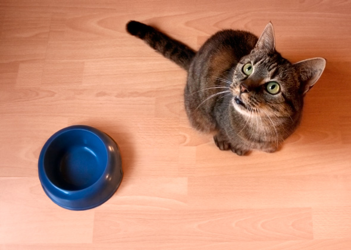

Meow, Meow
Aptent taciti sociosqu ad litora torquent per conubia nostra, per inceptos himenaeos. Curabitur feugiat tortor sed consectetur iaculis. Fusce cursus lacus viverra accumsan elementum. Nulla facilisi. Nunc diam leo, molestie quis facilisis ut, bibendum quis nunc. Nullam blandit magna ex, in volutpat sem volutpat vitae. Sed posuere faucibus eros quis vulputate. Fusce euismod eros non rhoncus aliquam. Quisque at tortor consequat, scelerisque erat in, sagittis dui. Suspendisse aliquam tortor eget urna convallis, ut faucibus felis efficitur. Nulla posuere nisl aliquam euismod interdum. Praesent blandit odio at finibus rutrum. Cras lorem neque, pellentesque at ligula a, suscipit sodales nibh. Aliquam erat volutpat. Nullam accumsan porta ante quis vehicula. Curabitur commodo nisi eget elit mollis, vel aliquam purus pretium.
Duis nibh quam, euismod quis sodales in, auctor ut mi. Etiam ligula ligula, mattis sit amet ex non, porta blandit ex. Suspendisse eleifend ipsum eget lacus vestibulum varius. Donec nec odio lacus. Mauris condimentum ante nec massa placerat ultrices. Nullam at faucibus tortor, at feugiat elit. Praesent ut purus nec justo facilisis elementum et sed metus. Vivamus fringilla dignissim lacus id cursus.
Nam efficitur est id dui volutpat gravida. Vestibulum non luctus mauris. Proin id dui bibendum, porta nisl sed, condimentum sapien. Duis pulvinar massa vitae lorem ullamcorper, porttitor ullamcorper erat lacinia. Suspendisse nec massa vel odio pulvinar feugiat. Nam sollicitudin dolor at ipsum tempor iaculis. Aliquam erat volutpat. Etiam porta, nibh dignissim facilisis mollis, nulla augue accumsan orci, ut auctor eros sem vitae ex. Mauris sit amet lacinia orci. Suspendisse eget ante viverra, egestas leo nec, rutrum risus. In tortor lectus, egestas eget vulputate ut, suscipit at sapien. Suspendisse vel ornare est, vel tempor nibh.

Meow, meow, meow...
Fusce ullamcorper quam vel dolor luctus tincidunt. Morbi consectetur orci in lorem euismod, vitae vulputate elit mollis. Pellentesque sed ipsum ornare, efficitur orci a, mollis massa. Morbi dictum maximus luctus. Sed dignissim, ex vitae euismod elementum, magna ligula consequat ante, nec porttitor elit nisl et urna. Phasellus congue tempus tempus. Aliquam erat volutpat. Aenean ornare, magna quis consectetur ultrices, lorem eros pharetra eros, ac luctus massa sapien sit amet eros. Praesent tempor tincidunt arcu nec scelerisque. Vivamus urna libero, condimentum accumsan feugiat quis, blandit accumsan velit. Mauris fermentum dictum nibh vitae interdum.
Aenean porta in nisi a auctor November 5th, 2024.